- 一.新建一个weChat代码仓库

- 二.创建私钥与私钥
1.查看生成步骤
1.在代码仓库点击个人头像->settings
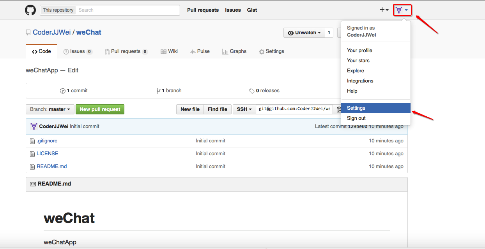 2.点击SSH,查看如何生成
3.点击生成一个新的SSH key

4.复制命令

2.生成SSH Key
1.打开终端,在终端输入刚刚复制的命令,并将邮箱改为github的邮箱帐号,提示文件保存的位置,默认保存在个人目录下,直接敲下回车
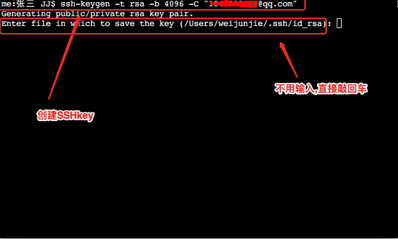 2.提示输入密码,可以不用输入,直接敲回车
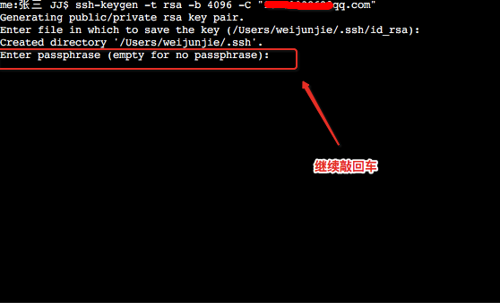 3.确认密码,直接敲回车

4.当看到以下牛逼的图标时代表SSH key已经生成完了
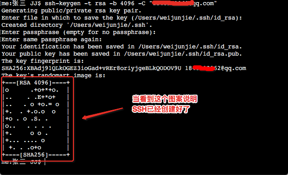3.查看SSH Key
点击前往->个人->.ssh隐藏文件夹

- 三.将公钥放到github上
1.回到 settings界面,点击 New SSH Key
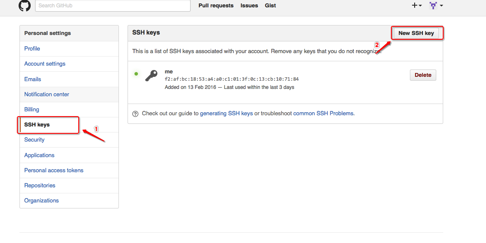2.复制公钥并给此公钥起名
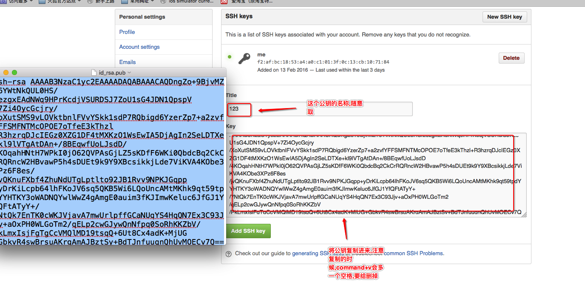3.查看刚添加的公钥
- 四.使用SSH添加远程仓库
1.来到wechat项目,复制SSH Key的地址

2.在xcode->偏好设置->添加远程仓库
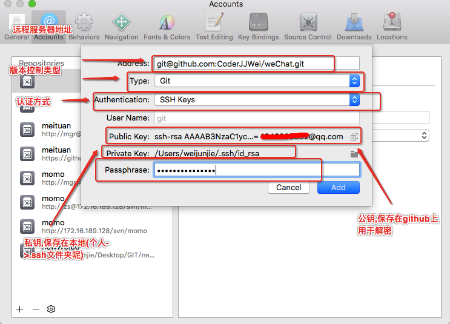3.看到这个界面说明已经添加好了

4.点击Source Control -> Checkout,选择weiChat代码仓库

5.点击downLoad进行下载

- 四.初始化项目
1.创建weChat项目到weChat本地版本库

2.将代码commit并push到远程代码仓库
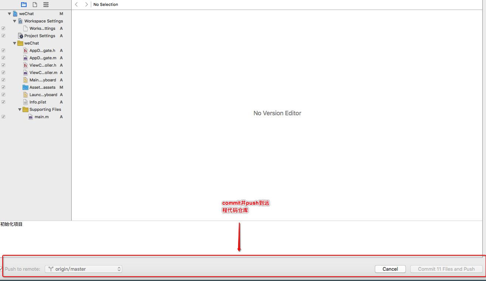3.浏览器查看远程代码仓库的weChat项目
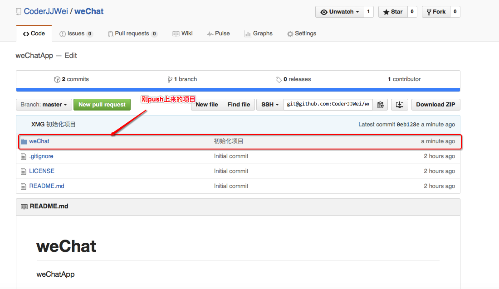4.项目中创建person类之后commit并push到远程代码仓库

5.浏览器查看刚刚push的person类

- 五.github删除代码仓库
1.查看有哪些代码仓库(点击头像,选择profile)
2.比如删除美团,点击美团项目

3.点击settings
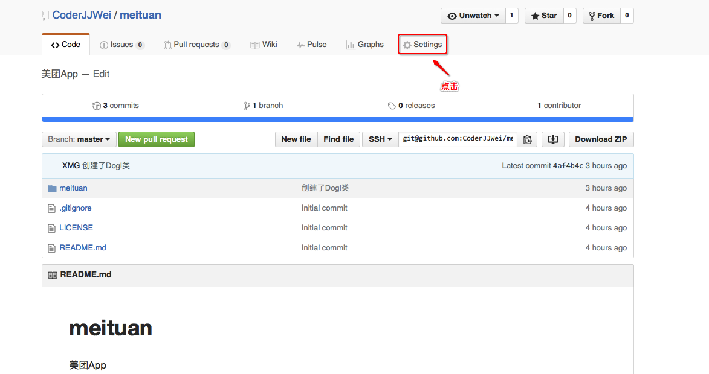4.移到最下面点击Delete this repository
5.输入要删除的代码仓库全称
6.再次查看代码仓库,美团已经没有了
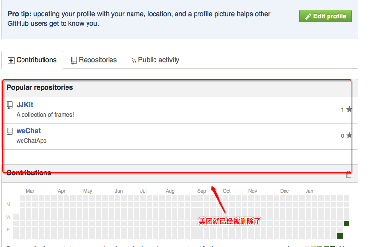
- 六.总结
1.查询是否存在SSH key
ls -al ~/.ssh
2.生成SSH key
ssh-keygen -t rsa -b 4096 -C "your_email@example.com"
3.私钥存在本地用于加密,公钥存在github上用于解密